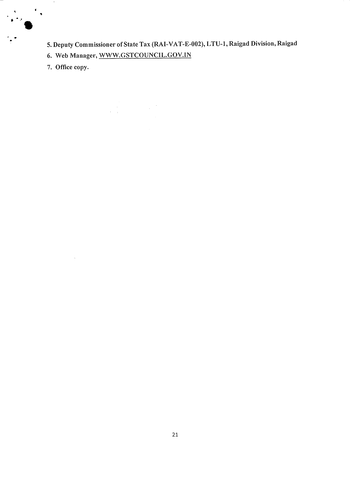

s
THIE M.AHIARASITRA APPELL.ATE AUTHORITY FOR .ADVANCE RULING FOR GOODS AND SERVICES TAX
(Constituted under Section 99 of the Maharashtra Goods and Services Tax Act, 2017)
ORDER NO. MAH/AAAR/AM-RM/11/2022-23 Date- 30.09.2022
BEFORE THE BENCH OF
(1) Shri Ashok Kumar Mehta, MEMBER (Central Tax)
(2) Shri Rajeev Kumar Mital, MEMBER (State Tax)
-- --- -----
Name and Address of the Appellant: M/s. Parker I lannifin India Private Limited. Plot EL-26.
MIDC TTC Industrial Area, Mahape, Navi Mumbai-
400709.
------ --- - --- --- -----------------· ---------------!
GSTIN Number:
27AAACP6820G1ZJ
Clause(s) of Section 97. under
(a} Classification of any goods or services or both.
which the question(s) raised:
Date of Personal Hearing:
16.09.2022
Present for the Appellant:
(i) Shri. Mayank Jain (ii) Shri. Shridhar Khedekar
Appeal No. MA/GST-AAAR/I3/2021-22 dated
09.02.2022 against Advance Ruling No. GST-ARA
Details of appeal:
109/2019-20/B-1 12 dated 15.12.2021 .
. -- ~--- -----
Jurisdictional Officer: Deputy Commissioner of State Tax (RAI-VAT-E-002).
I.TU- I. Raigad Division.
(Proceedings under Section 101 of the Central Goods and Services Tax Act, 2017 and the
Maharashtra Goods and Services Tax Aet, 2017)
I. At the outset. we would like to make it clear that the provisions or both the CGST Act and the
MGST Act are the same except for certain provisions. Therefore, unless a mention is
specifically made to such dissimilar provisions. a reference to the CGST Act would also mean
a reference to the same provisions under the MGST /\ct.
2. The present appeal has been filed under Section 100 of the Central Goods and Services Tax
Act. 2017 and the Maharashtra Goods and Services Tax Aet, 207 [hereinafter referred to as
CGST Act" and "MGST Aet"] by Mis. Parker Hannifin India Private Limited. Plot EL-
-•
26, MIDC TTC Industrial Area, Mahape, Navi Mumbai- 400709, ("hereinafter referred to as
"Appellant") against the Advance Ruling No. GST-ARA-120/2018-19/B-90 dated
10.11.2021., pronounced by the Maharashtra Authority for Advance Ruling (hereinafter
referred to as "MAAR").
BRIEF FACTS OF THE CASE
3. Parker Hannifin India Pvt. Ltd. is a company incorporated under the Companies Act 1956. and
is, inter alia, engaged in the manufacture and trading of various industrial goods such as filters,
actuators, nozzles, valves, lubricators, heat shielding. purifiers, hoses and the like which find
place in a lot of varied industries. The Appellant was duly registered under the erstwhile Central
Excise Act, 1944 and is also registered under Goods and Services Tax (hereinafter referred to
as "GST") laws with GST Identification Number 27AAACP6820G 1ZJ issued under the
Central Goods and Services Tax Act, 2017. Maharashtra Goods and Services Tax Act. 20 I 7
and equally applicable to the Integrated Goods and Services Tax Aet, 2017 (hereinafter referred
to as theIGST Acf).
4. So far as relevant to the present appeal, the Appellant is engaged in the manufacture and sale
of "Compressed Natural Gas Dispenser" (hereinafter referred to as "CNG Dispenser") which
is supplied for use at Compressed Natural Gas (hereinafter referred to as "CNG") dispensing
stations for vehicles and automobiles, which arc operated by city gas distribution Companies
like Mahanagar Gas Ltd. Gujarat Gas Ltd etc.
5. The CNG Dispenser supra is installed at consumer CNG fuel dispensing station's premises.
This CNG Dispenser has an inbuilt mechanism to constantly measure and regulate the mass of
natural gas being transferred to the vehicle as also the pressure of the natural gas so as to ensure
that the rated pressure capacity or the CNG tank in the vehicle is not exceeded, for reasons of
safety. Upon the pre-set values being reached, the CNG Dispenser. automatically. by way of a
control unit and actuator. cuts the supply of CNG to the CNG tank in the vehicle.
6. To commence refueling of CNG vehicles, the drivers / operators need to unhook the nozzle
from the CNG Dispenser and hook-up to the receptacle of the CNG tank in the vehicle.
Thereafter, the dispensing of CNG would commence upon activation. Throughout the process
of dispensing. the CNG Dispenser measures and regulates the pressure. If the pressure reaches
200 kg/cm° (196 Bar), the CNG Dispenser will automatically and without any human
intervention. stop the dispensing and cut-off supply. Further. all such refueling transaction data
• would be stored and subsequently downloaded into a computer or forecourt management
system.
7. For ease of reference, the main parts and components of a CNG Dispenser and their function
are noted infra:
a. Mass Flow Meter: Measures the mass of CNG being dispensed into the vehicle;
b. Pressure Sensor: Measures the pressure of the CNG in the storage tank of the vehicle to
ensure that it remains within the safe and recommended range;
c. Inlet banks: Allows the connection of the cascade bank at the fuel station to the CNG
Dispenser;
d. Actuators, ball valves: These are the parts of CNG dispenser to ensure start and stop of
the flow based on signals received from controller.
e. Tubes and hoses: These are used to route CNG from storage tank to vehicle cylinder.
f. Controller Unit: This is installed and acts as the electronic control unit to send instructions
to operate the valves, actuators etc. automatically.
8. As can be seen from supra, the CNG Dispenser manufactured and supplied by the Appellant
does not have any pump and neither does it perform any function of pumping. In such
background, the Appellant approached the MAAR for determination of the classification of the
same. Per the Appellant, as there is no pump, Heading 84.13 (pumps) is inapplicable. Further,
since the CNG Dispenser can automatically control and regulate the pressure and/ or value of
the CNG dispensed. it will qualify to be classified under Heading 90.32 as automatically
controlling or regulating apparatus. Annexed hereto Appeal Memorandum, is a copy of the
application preferred by the Appellant along with annexures including catalogues and technical
drawings.
9. From a bare perusal of the same, it can be said that the CNG Dispenser does not have a pump
or a pumping function. Rather, it has simpliciter inlets and outlets which allows for movement
of the CNG from the storage tank to the vehicle via the CNG Dispenser. The reason for
movement of the CNG is that the pressure in the tank is low, while that of being dispensed is
high. Hence, by principle of simple physics, viz., gas moves from a region of high pressure to
low pressure. It is also an undisputed fact that that there is no application of external force for
causing movement of CNG into the vehicle.
10. In such background, the department submitted a reply to the application ofthe Appellant supra •
submitting that the CNG Dispenser is correctly classifiable under Heading 84.13 only as it is
used to transmit fuel which is covered in the entry.
I I. The Appellant submitted a rejoinder to the submissions ofthe department stating that Heading
84.13 should be read completely and it includes within its fold pumps which are used to
dispense fuel and therefore, in the undisputed absence of the pump, there arises no question of
application of Heading 84.13.
12. Subsequent to supra, the MAAR passed the Impugned Order No. GST-ARA- I 09/2019-20/8-
112 dated 15. 12.2021 (hereinafter referred to as the "Impugned Advance Ruling") vide which
it has been held that the CNG Dispenser is correctly classifiable under Heading 84.13. The
Impugned Advance Ruling has held that the CNG Dispensers, being correctly classifiable under
Heading 84.13 are covered vide SI. No. I 17, Schedule IV of Notification No. I /2017-Central
Tax (Rate) dated 28.06.2017 and the corresponding notifications issued under the Maharashtra
Goods and Services Tax Act, 20 I 7 and the Integrated Goods and Services Tax Act, 20 I 7.
13. Being aggrieved by the "Impugned Advance Ruling". the Appellant is preferring the present
appeal before the Maharashtra Appellate Authority for Advance Ruling (hereinafter referred to
as the "MAAAR") on various grounds, which are without prejudice to each other.
APPLICATION FOR CONDONATION OF DELAY
14. The "Impugned Advance Ruling" dated 15.12.2021 was received by the Appellant on
16.12.2021. The present Appeal was filed by the Appellant on 09.02.2022. The Appellant
submits that the accompanying appeal is within the statutory period of limitation ofthirty days
prescribed under Section I 00(2) of the CGST Act and MGST Act, in view of the order dated
10.01.2022 of the Hon 'ble Supreme Court in Re: Cognizance for Extension of Limitation
[Suo Motu Writ Petition (Civil) No. 3 of2020J, in terms of which the period from 15 March
2020 to 28 February 2022 is required to be excluded for the purposes ofcalculating limitation.
Read with the above order, it is evident that the Appellant has filed the accompanying appeal
within the statutory period of limitation.
I 5. Without prejudice to the above and assuming that, in the opinion of the MAAAR, the above
referred orders passed by the Hon 'ble Supreme Court do not apply to the present case, the
Appellant humbly requests the MAAAR to condone the delay in filing the accompanying
• appeal in exercise of powers conferred under the proviso to Section I 00(2) of the CGST Act
and MGST Act, for the following reasons:
a) The drastic surge in the number of COVID-19 cases in the country due to the spread of
the new Omicron variant during late December 2021 up to late-January 2022. Several
employees of the Petitioner were diagnosed with COVID-19 during this period, which
adversely affected the day-to-clay operations of the Petitioner; and
b) The bonafide belief ofthe Petitioner that the above referred orders passed by the Hon'ble
Supreme Court applied to the present case, in terms of Articles 141 and 142 of the
Constitution of India.
GROUNDS OF APPEAL
A. The Impugned Advance Ruling has completely ignored the scope of Heading 84.13 and
incorrectly interpreted the same
16. The relevant part of Notification No. 1/2017-Central Tax (Rate) dated 28.06.20 I 7 is
reproduced infra:
Chapter/ - i
Heading/ Sub
SI.
Description of Goods
No. heading/ Tariff
Item ____j
I 17. 8413 Pumps for dispensing fuel or lubricants of the type used in filling :
stations or garages [8413 I I], Fuel, lubricating or cooling medium '
pumps for internal combustion piston engines [8413 30 I] I
17. Explanation (iv) to the Notification No. 1/2017-Central Tax (Rate) dated 28.06.2017 reads
adopt the principles of the General Rules for Interpretation to the Customs Tariff, to the extent
as applicable. Therefore, for any item to be covered in SI. No. 117 supra, it is trite that the
following conditions be satisfied:
a) That the same be covered by Heading 84.13 of the Customs Tariff; and
b) That the same answer to the description, viz., the item in question should be a pump which
is used in filling stations or garages.
I 8. In so far as (a) supra is concerned. Heading 84.13 as occurring in the Customs Tariff is
reproduced infra:
r------- -- ~- ---~- - -- ----- ~ - -------- - -- -·- --- -- -·-- ·-- -- I •
Tariff Item i Description of Goods !
: ~ -- j ·--- -- ---- -- -- - ---- --- - ---- - - -~ ·--- -··- - - -- ----------i
i 8413 I Pumps for liquids, whether or not fitted with a measuring device; ,
! liquid elevators
i I -------------- ~ ·--- --- - ---------- --- ------ ----------t,
i - Pumpsfitted or designed lo befitted with a measuring device
8413 11
}--Pumpsfor dispensingfuel or lubricant ofthe type used infilling stations
I or garages
I
19. In order to understand the scope of Heading 84.13, recourse has to be made to the Explanatory
Notes, which per the judgment of the Hon 'ble Supreme Court of India in CCE vs ood Craft
Products Ltd. [1995 (77) ELT 23 (SC)/ is a determinative and extremely persuasive guide to
interpreting tariff entries. The relevant portion is reproduced infra for ready reference:
"This heading covers most machines and appliances fen· raising or otherwise
continuously displacing volumes of liquids (including molten metal and wet concrete).
whether they are operated by hand or by any kind ofpower unit. integral or otherwise.
The heading also includes delivery pumps equipped with measuring or price
calculating mechanisms such as are usedfor supplying petrol or oil in garages, and
also pumps specially designed/or use with other machines, vehicles. etc. (including
petrol. oil or water pumps for internal combustion engines, andpumps for man-made
textile fiber spinning machines).
The machines ofthis heading can be subdivided, according to their system ofoperation,
into the following.five categories.
(A) RECIPROCATING POSITIVE DISPLACEMENTPUMPS
These use the linear suction or forcing action of a piston or plunger driven within
cylinder, the inlet and outlet being regulated by valves. "Single-acting" pumps utilise
the thrust or suction of one end ofthe piston only; "double-acting"" typespump at both
ends· of the piston thus using both the forward and reverse strokes. In simple "liji"
pumps the liquid is merely raised by suction and discharged against atmospheric
pressure. In '.'force" pumps, the compression stroke is used, in addition to the suction
stroke, toforce the liquid to heights or against pressure. !vlulti-cy/inderpumps are used
for increased output. The cylinders may be either in line or in a star shape.
• (BJ ROTARY POSITIVE DISPLACEMENT PUMPS
In these also, the intake and discharge of the liquid is effected by suction and
compression, in this case produced by cams (lobes) or similar devices, rotated
continuously on an axis. These devices make contact, at one or more points with the
wall ofthe body of the pump, andform in this way the chambers in which the liquid is
displaced.
(CJ CENTRIFUGAL PUMPS
In these pumps, liquid taken in axially is set in rotation by the revolving blades of a
rotor (impeller), the resulting centrifugal action forcing the liquid outwards to the
periphery of an annular casing containing an outlet placed tangentially The casing is
sometimes Jilted with divergent vanes (diffuser vanes) to transform the kinetic energy
ofthe fluid into high pressure.
Centrifugal pumps may be driven by an electric or internal combustion motor or by a
turbine. Because of their high working speed, they are suitable for direct coupling
whereas piston or rotary pumps require to be driven through reduction gears.
This group also covers submersible pumps, central healing circulatingpumps, channel
impeller pumps, side channel pumps and radial.flow impeller pumps.
(DJ OTHER PUMPS
The followingpumpsfall in this group :
I) Electro-magnetic pumps....
2) Ejectors....
3) Emulsion pumps.
20. As can be seen from a bare perusal of supra, the pump covered under Heading 84.13 is an
instrument that is used for raising and/ or displacing volumes of liquids. In simpler terms, the
instrument must be a mechanical or electrical device which uses principles of suction or
pressure or any other force to move a liquid from one place or point to another. Only then can
an item be covered by Heading 84.13. As a matter of fact, such meaning is also the dictionary
meaning of the word pump as evidenced by infra:
out ofsomething. Oxford Learners Dictionary: a machine that is used toforce liquid, gas or air into or •
Merriam-Webster: a device that raises, transfers, delivers, or compressesfluids or that
attenuates gases especially by suction or pressure or both.
21. Therefore, the essential feature of a pump covered by Heading 84.13 and SI. No. 117, Schedule
IV ofNotification No. 1/2017-Central Tax (Rate) dated 28.06.2017 is that it must be a device
which applies an external force to move, deliver, transport or raise liquids from one particular
point to another. Such meaning has also been concluded in paragraphs 5.4 to 5.6 of the
Impugned Advance Ruling.
22. However, entirely contrary to supra, the Impugned Advance Ruling at paragraph 5.8 and 5.10
makes a finding as infra:
"The impugned product causes the CNG to flo from the filling station to the CNG
Tank ofthe vehicle. Thus there is ow o oas in one articular direction and is the
CNG Dis, enser which is causino the CNG to move rom one lace to another. Thus
the impuoned roduct is also unctionina as ¢
mentioned above. I can therefore be said that CNG fuel dispensers are used for
distribution of Compressed Natural Gas (CNG) which is a fuel and as per the
submissions of the applicant, they are equipped with electronic counters of quantity
andprice ofpumping.
5.10 We find that Chapter Heading 8413 I J rd· the GST Tariff covers "Pumps for
dispensing fuel or lubricants of the type used in filling stations or garages". The
im, uoned roduct is desioned to disense uel in this case CNG. which are used in
Illin° stations and acts as a um which causes CNG a oas. to move rom one )lace
to another. Tints, the impugned product can be said to be a type qfpump which are
usedfor dispensingfuel and are therefore classifiable under HSN 8413 11 91 of the
GST Tari.ff"'
[Emphasis supplied[
23. As can be seen from supra, the Impugned Advance Ruling holds that the CNG Dispensers
supplied by the Appellant qualifies to be a pump because it is causing movement of the CNG
from one place to another in a particular direction. It is submitted that such conclusion is not
only patently against the Explanatory Notes and dictionary meanings supra, the same is
• patently illogical and unreasonable. If such findings is assumed to be correct in law, a
simpliciter steel tube or a pipe also qualifies to be a pump, which is absurd, irrational and cannot
be accepted in law.
24. In sum therefore, it is submitted that the CNG Dispenser in question supplied by the Appellant
does not have any pump or pumping function, i.e., an external force by virtue of which the
CNG is transported from the filling station to the vehicle tank. This statement is undisputed as
evident vide paragraph 5.9 of the Impugned Advance Ruling. Further, as required by the
Explanatory Notes supra, the CNG Dispenser factually does not have any pump of a kind noted
therein and therefore, cannot be classified in Heading 84.13 and covered vide SI. No. 117,
Schedule IV of Notification No. 01/2017-Central Tax (Rate) dated 28.06.2017.
25. Merely because the SI. No. 117, Schedule IV of Notification No. 01/2017-Central Tax (Rate)
dated 28.06.20 I 7uses the phrase "filling stations or garages" does not mean that the former
part, viz., "pump for dispensing fuel" be ignored. It is trite that tariff entries must be literally
interpreted and on a bare perusal of the same, it is necessary that there be a pump first, and such
pump be used for dispensing fuel for coverage therein. Merely because the CNG dispensed by
the CNG Dispenser supplied by the Appellant is a fuel used in motor vehicles, cannot be reason
to hold that there is a pump. The requirement of the existence of a pump should be first
independently satisfied and then the requirement of fuel or not be examined. In the present
case, the Impugned Advance Ruling has erroneously held that because the CNG flows from
one direction to the other, it is performing the function of a pump. However, as stated in the
averments supra, such a conclusion is sans any logic and against the Explanatory Notes also.
B. The CNG Dispenser is correctly classifiable in Heading 90.32 and SI. No. 422, Schedule III
of Notification No. 01/2017-Central Tax (Rate) dated 28.06.2017
26. For ease of reference. the text of SI. No. 422, Schedule III of Notification No. 01/2017-Central
Tax (Rate) dated 28.06.2017 and that of Heading 90.32 is reproduced infra:
Sr. Chapter/Heading/Sub Description of Goods
No. heading/ Tariff Item
422. 9032 Automatic regulating or controlling instruments and
apparatus
-
Tariff Item Description of Goods
-- ----- ---- --- - . .. --- --
9032 Automatic regulating or controlling instruments and apparatus l
27. Chapter Note 7 to Chapter 90 lays down the criteria for coverage under Heading 90.32. The •
text of the same is reproduced for ready reference:
"7. Heading 9032 applies only to:
(a) instruments and apparatusfor automatically controlling the flow, level, pressure
or other variables of liquids or gases, or for automatically controlling
temperature, whether or not their operation depends· on an electrical
phenomenon which varies according to thefactor to be automatically controlled,
which are designed to bring this factor to, and maintain it at, a desired value.
stabilizedagainst disturbances. by constantly orperiodically measuring its actual
value: and
(b) automatic regulators of electrical quantities, and instruments or apparatus for
automatically controlling non-electrical quantities the operation of which
depends on an electrical phenomenon varying according to the factor to be
controlled, which are designedto bring thisfactor to, andmaintain it at, a desired
value, stabilized against disturbances, by constantly or periodically measuring
its actual value."
28. The Explanatory Notes further explain the scope of Chapter Note 7(a) and Heading 90.32 as
infra:
"() INSTRUMENTS AND APPARATUS FOR AUTOMATICALLY
CONTROLLING THE FLOW, LEVEL, PRESSURE OR OTHER VARIABLES OF
LIQUIDS OR GASES. OR FOR AUTOMATICALLY CONTROLLING
TEMPERATURE
Automatic control apparatusfor liquids or gases and apparatusfor automatically
controlling temperature form part of complete automatic control systems and
consist essentially of the following devices:
A device for measuring the variable to be controlled (pressure or level in a tank,
temperature in a room, etc.); in some cases. a simple device which is sensitive to
changes in the variable (metal or hi-metal rod, chamber or bellows containing an
expanding liquid, float, etc.) may he used instead of a measuring device.
A control device which compares the measured value with the desired value and
actuates the device described in (C) below accordingly.
• A starting, stopping or operating device.
Apparatusfor automatically controlling liquids or gases or temperature, within the
meaning of Note 7 (a) to this Chapter, consists of these three devices forming a
single entity or in accordance with Note 3 to this Chapter, afunctional unit.
29. Therefore, in accordance with the HSN Explanatory Notes, there goods in question must be an
automatic control device with three seminal criterion supra in terms of which a particular item
is classifiable under Heading 90.32. It is submitted that the CNG Dispenser in question satisfies
all the requirements, as shown infra:
a. Device (or measuring the variable to be controlled: In the present case, the CNG
Dispenser measures both mass andpressure ofthe CNG being dispensed into the vehicle
by the massflow meter and the pressure sensor;
b. Control device which compares the measured value with the desired value and
actuates the device described in (C) below: Controller unit of the CNG Dispenser
continuously compares the mass andpressure ofthe CNG in the CNG tank and actuates
by way ofstopping or cutting-offthe supply of natural gas once the desired values are
reached:
c. A starting, stopping or operating device: As explained in (B) above. the control unit
keeps a check on the pressure and mass and as and when the desired/ safe values are
reached, supply is stopped by way ofactuators and valves.
30. Hence, as evidenced from supra, the pre-requisites of an automatic control system stand
satisfied and hence, the device is correctly classifiable under Heading 90.32 and consequently,
correctly covered vide SI. No. 422. Schedule III of Notification No. 1/2017-Central Tax (Rate)
dated 28.06.2017.
31. In addition to supra, it is submitted that the exclusion provided for in the Explanatory Notes to
Heading 90.32 is also not applicable in the present case. For ease of reference, the same is
reproduced below for ready reference:
"Instruments and apparatus for automatically controlling the flow, level,
pressure and other variables ofliquids or gases orfor automatically controlling
temperature are connected to an appliance which carries out the orders (pump,
compressor, valve, furnace burner, etc.) which restores the variable (e.g. liquid
measured in a tank or temperature measured in a room) lo the prescribed value,
or which, in the case of a safety system for instance. stops the operation of the
machine or apparatus controlled. This appliance, generally remote controlled •
by a mechanical, hydraulic, pneumatic or electric control, is to be classified in
its own appropriate heading (pump or compressor: heading 84.13 or 84.14;
valve: heading 84.81, etc.). Ifthe automatic control apparatus is combined with
the appliance which carries out the orders. the classification ofthe whole is to
be determined under either Interpretative Rule I or Interpretative Rule 3 ()
(see Part (Ill) of the General Explanatory Note to Section XVI and the
Explanatory Note 10 heading 84.81).°
32. Basis a bare reading of the above, it is clear that if the controlling device is combined with the
appliance which carries out the orders of pumping/ compressing etc.. only then is the measuring
device liable to be classified in the entry relating to the appliance which carries out the orders.
In the present case, the CNG Dispenser does not do the job of compression and/ or pumping
and the same is never presented along with a compressor or a pump. Rather, it is sold as a
separate and distinct unit which merely measures and controls the amount of CNG being
dispensed according to preset parameters. Hence, there is no application of the exclusion
thereto.
33. Therefore, for the reasons submitted supra, the CNG dispenser deserves to be correctly covered
by SI. No. 422. Schedule III of Notification No. 01/2017-Central Tax (Rate) dated 28.06.2017
and consequently, the Impugned Advance Ruling deserves to be quashed forthwith.
RESPONDENTS SUBMISIONS
34. The Jurisdictional Officer vide their letter dated 24.02.2022 have made the following
submissions:
a. That the appellant stated that there is no liquid being discharged by the CNG dispenser.
Rather what is being transmitted is gas and nothing else, which the CNG dispenser only
regulates, But the main purpose of CNG dispenser is to transmit the fuel and as per the
Notification No. 1/2017-Central Tax (Rate) dated 28th .lune 2017, CNG dispenser covered
under heading 8413 " Pumps for dispensing fuel or lubricants of the type used in filing
stations or garages [8413 I I], fuel , lubricating or cooling medium pumps for internal
combustion piston engines [8413 30].
b. Therefore, CNG dispenser is liable to tax 14% COST & SGST both or 28% 1GST.
•
PERSONAL HEARING
35. The personal hearing in the matter was conducted on 16.09.2022 in virtual mode via Video
Conferencing, which was attended by Shri. Mayank Jain and Shri. Shridhar Khedekar on behalf
of the Appellant, wherein the Appellant reiterated their earlier submissions made while filing
the Appeal under consideration.
36. Shri. Mayank Jain, in the aforesaid hearing, contended that the Appellant is engaged in the
manufacture and sale of CNG Dispenser which is supplied for use at CNG dispensing stations
for vehicles and automobiles, which are operated by city gas distribution Companies like
Mahanagar Gas Ltd, Gujarat Gas Ltd etc. The CNG Dispenser supra is installed at consumer
CNG fuel dispensing station's premises. This CNG Dispenser has an inbuilt mechanism to
constantly measure and regulate the mass and pressure of natural gas being transferred to the
vehicle's fuel tank as per the pre-set values of the devices. The CNG Dispenser, automatically,
by way of a control unit and actuator, cuts the supply of CNG to the CNG tank in the vehicle.
37. He further contended that the CNG Dispenser manufactured and supplied by the Appellant
does not have any pump and neither does it perform any function of pumping. As per the
Appellant, as there is no pump. Heading 84.13 (pumps) is inapplicable. Further, since the CNG
Dispenser can automatically control and regulate the pressure and/ or value of the CNG
dispensed, it will qualify to be classified under Heading 90.32 as an automatically controlling
or regulating apparatus. The Appellant has also made reference of technical drawings in this
regard and contended that the CNG Dispenser does not have a pump or a pumping function.
Rather, it has simpliciter inlets and outlets which allows for movement of the CNG from the
storage tank to the vehicle via the CNG Dispenser. The reason for movement of the CNG is
that the pressure in the tank is low, while that of being dispensed is high. Hence, by principle
of simple physics, viz., gas moves from a region of high pressure to low pressure. It is also an
undisputed fact that there is no application of external force for causing movement of CNG into
the vehicle. Shri. Mayank Jain also sought to file additional submissions with respect to a query
raised by the Bench regarding the classification and other issues as discussed in the aforesaid
hearing.
ADDDITIONAL SUBMISSION DT.22.09.2022
38. The appellant in their additional submissions dated 22.09.2022 have reiterated their earlier
position stating that the impugned product merit classification under Chapter heading 90.32
rather than the heading 84.13 owing to the reasons stated in the averment recorded in the appeal •
memorandum.
DISCUSSIONS AND FINDINGS
39. We have carefully gone through the entire appeal memorandum containing the submissions
made by the Appellant vis-a-vis the Advance Ruling passed by the MAAR, wherein the MAAR
has held that the impugned product, i.e., CNG dispenser, is classifiable under Chapter Heading
84.13 placed at SI. No. 117, Schedule IV of Notification No. 1/2017-Central Tax (Rate) dated
28.06.2017. The MAAR has founded their aforesaid ruling on their interpretation of the entry
at SI. No. 117 of Schedule IV of the Notification No.1/2017-C.T. ( Rate) dated 28.06.2017,
which is being reproduced hereunder:
Chapter/
SI. Heading/ Sub
No. Description of Goods
heading/ Tariff
Item
117. 8413 i Pumps for dispensing fuel or lubricants of the type used in filling
! stations or garages [8413 1]. Fuel, lubricating or cooling medium
; pumps for internal combustion piston engines [8413 30 I]
In this regard. the MAAR has observed as under:
21. The impugned product causes the CNG to flow from the filling station lo the
CNG Tank ofthe vehicle. Th us, there is flow o(gas in one particular direction and
is the CNG Dispenser which is causing the CNG to move from one place to
another. Thus, the impugned product is also functioning as a pump in view ofthe
definitions mentioned above. It can therefore be said that CNGfuel dispensers are
usedfor distribution of Compressed Natural Gas (CNG) which is afuel and as per
the submissions of the applicant., they are equipped with electronic counters of
quantity andprice ofpumping.
5.10 We find that Chapter Heading 8413 11 of the GST Tariff covers "Pumps for
dispensingfuel or lubricants of the type used in filling stations or garages". The
impugned product is designed to dispense fuel, in this case CNG, which are used
in filling stations, and acts as a pump which causes CNG, a gas, to move from
one place to another. Tints, the impugnedproduct can be said to be a type ofpump
• which are usedfor dispensingfuel and are therefore classifiable under HSN 8413
11 91 ofthe GST Tariff"
40. As regards the aforesaid observations of the MAAR, the Appellant have contended that the
aforesaid observations of the MAAR are contrary to the explanatory notes to the Chapter 84
and the dictionary meanings of the term "pump". It has further been contended by the
Appellant that if such interpretation of CNG dispenser as have been derived by the MAAR
wherein they have contemplated the impugned product as pump attributing to its ability to
cause movement of CNG from the filling station to vehicle tank, i.e., from one place to another,
thereby, acting as a pump, is assumed to be correct in law, then a simpliciter steel tube or a
pipe, which also carries liquid or gases from one place to another, would also qualify to be a
pump, which is absurd and irrational. It is further contended by the Appellant that the CNG
Dispenser in question supplied by the Appellant does not have any pump or pumping function,
i.e., an external force by virtue of which the CNG is transported from the filling station to the
vehicle tank. In this regard, the Appellant have relied upon the observations made by the
MAAR in the paragraph 5.9 of the Impugned Advance Ruling where the MAAR has noted that
it is the external force generated by the pump which causes the movement of I iquid or gases
from one place to another. They further contended that since the CNG Dispenser factually does
not have any pump as such which causes the transportation of gases from one point to another,
and therefore, cannot be classified in Heading 84.13 and covered vide SI. No. 117, Schedule
IV of Notification No. 01/2017-Central Tax (Rate) dated 28.06.2017.
41. It has further been contended by the Appellant that merely because the SI. No. 117, Schedule
IV of Notification No. 0 1/2017-Central Tax (Rate) dated 28.06.20 I 7 uses the phrase "filling
stations or garages" does not mean that the former part, viz., "pump for dispensing fuel" be
ignored. In this regard, they have submitted that tariff entries must be literally interpreted and
accordingly, it is contended that there should be a pump at the first place, which dispenses the
fuel or lubricants of such kind which are used in filling station or garage. They have further
contended that merely because the CNG dispensed by the CNG Dispenser is a fuel filled in
motor vehicles at the filling station, cannot be reason to hold that there is a pump. The
requirement of the existence of a pump should be first independently satisfied and then the
question of the kind of fuel would arise. In the present case, the Impugned Advance Ruling has
erroneously held that because the CNG flows from one direction to the other, it is performing
the function of a pump.
42. On perusal of the aforesaid contention of the Appellant vis-a-vis the impugned advance ruling •
of the MAAR, the moot issue before us is as to whether the impugned product can be
construed as "pump" as provided under the relevant entry of the Notification No.
01/2017-C.T.(Rate) dated 28.06.2017.
43. To decide the aforesaid issue, we would like to understand the meaning of the term "pump". It
is observed that the term "pump" is neither defined under the GST law including Acts, rules,
or notification issued thereunder, nor under the Customs Tariff Act, 1975, which has been
referred to in the notification no. 0I/2017-C.T. (Rate) dated 28.06.2017, for the purpose of
determining HSN of the goods based on the descriptions contained in the Chapters of the first
schedule to the Customs Tariff Act, 1975. Under these circumstances, we would like to refer
to the dictionary meaning of the said term "pump", which is being reproduced hereunder:
Oxford Learners Dictionary: a machine that is used toforce liquid, gas or air into or out of
something;
Merriam-Webster: a device that raises, transfers, delivers, or compresses fluids or that
attenuates gases especially by suction or pressure or both.
44. On bare perusal of the aforesaid meaning of the term "pump", it is evident that for any device
or apparatus to qualify for the pump, it should transfer or deliver liquid or gases by using
pressure or suction or both. On perusal of the descriptions of the impugned product, CNG
Dispenser, as submitted by the Appellant, it is noticed that the impugned product does not use
pressure or suction to transfer the gas from filling station to fuel tank of the vehicle. It is further
observed that it is the difference between the pressures of the gas in the filling station and that
in the fuel tank of the vehicle that actuate the flow of gas from the filling station to the fuel
tank. That is, the pressure in the filling station is higher than that in the fuel tank. Since it is
trite that the gas flows from high pressure to low pressure, accordingly, the gas in the filling
station starts flowing into the fuel tank of the vehicle.
45. Now, we would like to refer to the relevant entry under Chapter 84 of the Customs Tariff Act,
1975, which is being reproduced hereunder:
Tariff Item Description of Goods
---·-------~---------<
8413 Pumps for liquids, whether or not fitted with a measuring device;
, liquid elevators
. ?• •.~ [ : · · Pltm;iJi//;d or :i,;g;ed to-i,;flIIed wfth a me;s;;;;~~ d;;;;;,- --1
8413 I 1 t -- Pumps.for dispensing.fi1el or lubricant ofthe type used infilling stations
Or gal'age.S -- --- "
46. Now, we set out to examine the explanatory note of Chapter 84 of the Customs Tariff Act,
1975, which is being reproduced hereunder:
"This heading covers most machines and appliancesfor raising or otherwise continuously
displacing volumes of liquids (including molten metal and wet concrete). whether they are
operated by hand or by any kind ofpower unit, integral or otherwise.
The heading also includes delivery pumps equipped with measuring or price-calculating
mechanisms such as are used for supplying petrol or oil in garages, and also pumps
specially designedfor use with other machines. vehicles, etc. (includingpetrol, oil or water
pumps for internal combustion engines, and pumps for man-made textile fiber spinning
machines).
The machines of this heading can be subdivided, according to their system 17
In these pumps, liquid taken in axially is set in rotation by the revolving blades ofa rotor • -.
(impeller), the resulting centrifugal actionforcing the liquid outwards to the periphery of
an annular casing containing an outlet placed tangentially The casing is sometimes Jilted
with divergent vanes (diffuser vanes) to transform the kinetic energy of the fluid into high
pressure.
Centrifugal pumps may be driven by an electric or internal combustion motor or by a
turbine. Because oftheir high working speed. they are suitablefor direct coupling whereas
piston or rotary pumps require to be driven through reduction gears.
This group also covers submersible pumps, central healing circulating pumps, channel
impeller pumps, side channel pumps and radialflow impeller pumps.
(D) OTHER PUMPS
The.following pumps/all in this group:
I) Electro-magnetic pumps....
2) Ejectors. ...
3) Emulsion pumps.... "
47. Thus, as can be seen from a bare perusal of supra, the pump covered under Heading 84.13 is
an instrument that is used for raising and/or displacing volumes of liquid from one place to
another, using external forces, which may be in the nature of pressure or suction. Since the
impugned product, CNG Dispenser, does not use any external force driven by any electrical or
mechanical devices, the same cannot be considered as pump in terms of its meaning provided
under the explanatory note as detailed hereinabove.
48. Since it has been established now that the impugned product is not a pump, which is the
primary clause of the entry of the chapter heading 84.13, the same will not be classified
under Chapter Heading 84.13.
49. Now, we set out to determine the correct classification of the impugned product, CNG
Dispenser. The Appellant have advocated the classification ofthe impugned product under the
Chapter Heading 90.32 mentioned at SI. No. 422. Schedule III to the Notification No. 01/2017
Centra I Tax (Rate) dated 28.06.2017. To ascertain their claim, we would like to refer to the
entry at SI. No. 422 of the Schedule III to the Notification No.01/2017-C.T.(Rate) dated
28.06.2017, which is reproduced hereafter:
• Sr. Chapter/Heading/Sub --. Description of Goods
No. heading/ Tariff Item
422. 9032 Automatic regulating or controlling instruments and
apparatus
50. Chapter Note 7 to Chapter 90 lays down the criteria for coverage under Heading 90.32. The
text of the same is reproduced for ready reference:
"7. Heading 9032 applies only to:
(a} instruments and apparatusfor automatically controlling the flow, level, pressure
or other variables of liquids or gases, or for automatically controlling
temperature, whether or not their operation depends on an electrical
phenomenon which varies according to thefactor to be automatically controlled,
which are designed to bring this factor to, and maintain it al, a desired value
stabilized against disturbances by constantly or periodically measuring its actual
value; and
(b) automatic regulators of electrical quantities, and instruments or apparatus for
automatically controlling non-electrical quantities the operation of which
depends on an electrical phenomenon varying according to the factor lo he
controlled, which are designed to bring thisfactor to, andmaintain ii at, a desired
value, stabilized against disturbances. by constantly or periodically measuring
its actual value."
51. The Explanatory Notes further explain the scope of Chapter Note 7(a) and Heading 90.32 as
infra:
"(/) INSTRUMENTS AND APPARATUS FOR AUTOMATICALLY CONTROLLING
THE FLOW, LEVEL, PRESSURE OR OTHER VARIABLES OF LIQUIDS OR
GASES, OR FOR AUTOMATICALLY CONTROLLING TEMPERATURE
Automatic control apparatus for liquids or gases and apparatus for automatically
controlling temperature form part of complete automatic control systems and
consist essentially of the following devices:
A device for measuring the variable to be controlled (pressure or level in a tank,
temperature in a room, etc.); in some cases. a simple elevice which is sensitive to
a
changes in the variable (metal or bi-metal rod, chamber or bellows containing an 2 ... !• er.
expanding liquid, float, etc.) may be used instead ofa measuring device.
A control device which compares the measured value with the desired value and
actuates the device described in (C) below accordingly.
A starting, stopping or operating device.
Apparatusfor automatically controlling liquids or gases or temperature, within the
meaning of Note 7 (a) to this Chapter, consists of these three devices forming a
single entity or in accordance with Note 3 lo this Chapter, afunctional unit.
Now, since as per the submissions made by the Appellant regarding components of the
impugned device which includes the components like pressure sensor, controller unit,
which automatically control and regulate the pressure of CNG being dispensed into the
fuel tank, it is observed that the impugned device would merit classification under the
Chapter Heading 90.32 placed at SI. No. 422 of the Schedule III to the Notification No.
01/2017-C.T.(Rate) dated 28.06.2017.
52. In view ofthe above discussions and findings, we pass the following order:
53. We, hereby, set aside the impugned Advance Ruling Order No. GST-ARA-109/2019-
20/8-112 dated 15.12.2021 by holding that the impugned product, CNG Dispenser, will
be covered by SI. No. 422, Schedule III ofNotification No. 01/2017-Central Tax (Rate)
dated 28.06.2017. Thus, the appeal filed by the Appellant is hereby allowed.
(RAJEEV KU AR (ASH OK KUMAR M4/),'J__./
MEMBER
MEMBER
Copy to the:
1. Appellant; 2. AAR, Maharashtra
3. Pr. Chief Commissioner, CGST and Central Excise, Mumbai Zone.
4. Commissioner of State Tax, Maharashtra.
5. Deputy Commissioner of State Tax (RAI-VAT-E-002), LTU-1, Raigad Division, Raigad
6. Web Manager, WWW.GSTCOUNCIL.GOV.IN
7. Office copy.

" .. • .- "•.- a "